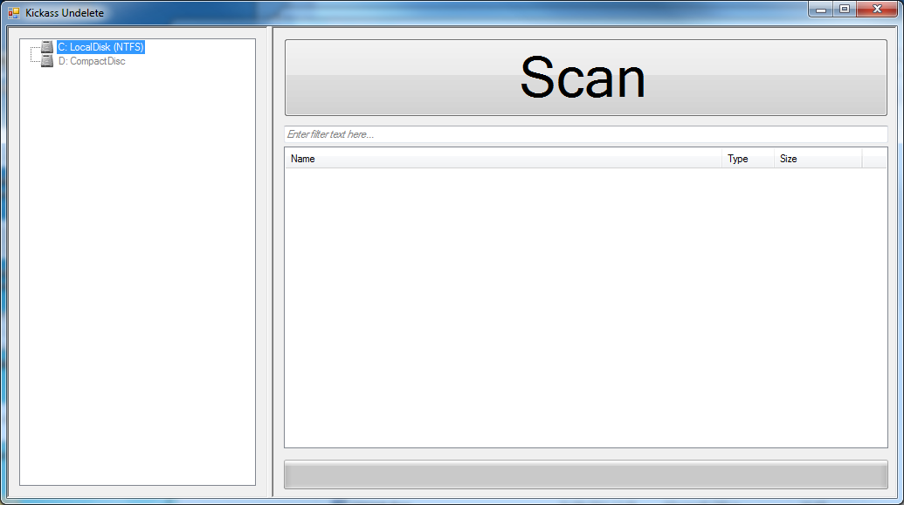
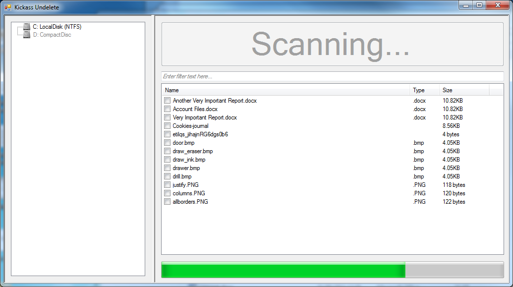
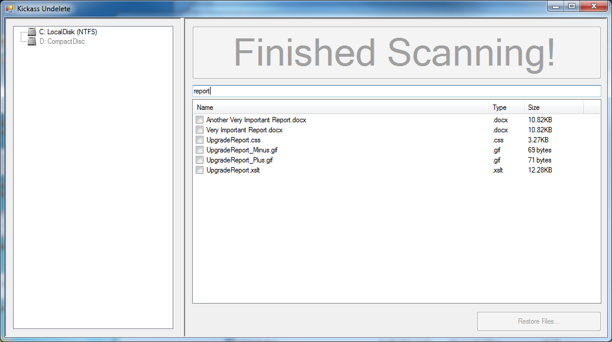
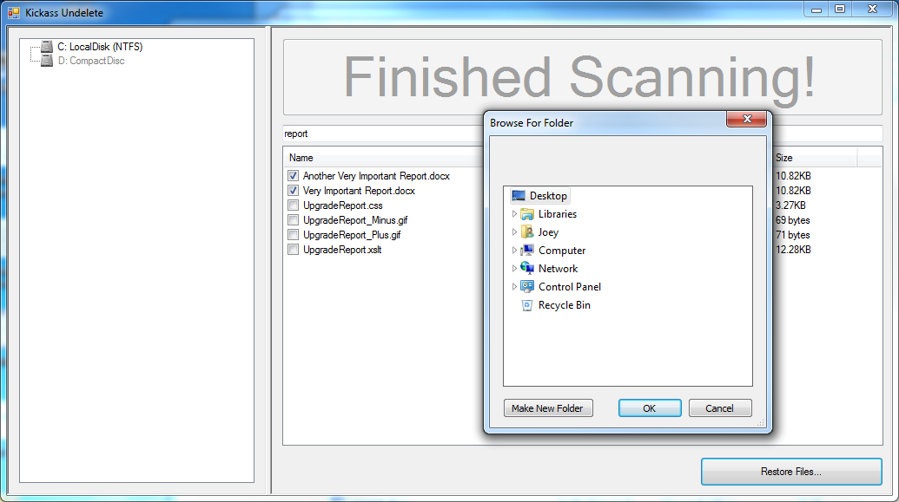

About
Kickass Undelete is a free, fully featured, file recovery tool for Windows. Accidentally deleted a file? Never fear; the data is probably still on your drive and may be recoverable. Kickass Undelete finds all of the deleted files on your hard drive, flash drive or SD card and allows you to recover them.
Disclaimer: Undeletion works best if performed as soon as possible after file deletion. When you delete a file, the data is not lost - but new files being written to the hard drive may overwrite your data permanently, making recovery impossible.
Features:
- Free and Open Source
- Support for both FAT and NTFS filesystems
- Filter by filename and extension
- Easy-to-use interface
- Unreasonably large scan button
Kickass Undelete is open source! Visit our project on Sourceforge to report bugs or contribute to the project.
Screenshots:
   {kind=link}
{kind=link}
{kind=link}
{kind=link}
Downloads
Latest version:
| 1.5.5 | ||
|---|---|---|
| Windows binary (exe) | KickassUndelete_1.5.5.exe | 198.1 kB |
| Release notes | README.txt | 2.2 kB |
| Source | Git repository | |
Developers
Joey Scarr
Josh Oosterman
Liz Korsika